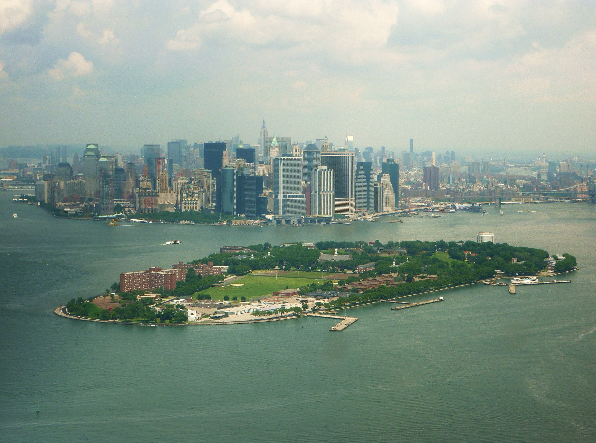

New York Times, in 1637, Dutch settlers bought what is now Governor’s Island, for two “ax heads, some beads and a few iron nails”. The island’s unique location resulted in its serving military functions for most of its American history. The last of those roles was to house US Coast Guard
base which it did for 29 years, closing in 1995. President Regan even invited Mikhail Gorbachev here for a US – USSR summit in 1988. ♦
The New York State and the City of New York got a much better deal than the native Americans three and a half centuries before. In 2003, they purchased the island from the federal government for ...
$1. That despite the Congressional Budget Office estimating the islands’ value at
$500 million. The critical requirement attached to the transaction was that no commercial developments take place on the islet. As a result of that limitation, the redevelopment of the landmark has been proceeding with difficulties. The good news is that the island is now open to the public during summers (follow the links for sources).
Click on the picture for larger versions (you will need to press the 'Back' button to return)."
data-link="new_york_flyby_pictures/ManhattanIamComing3.jpg">